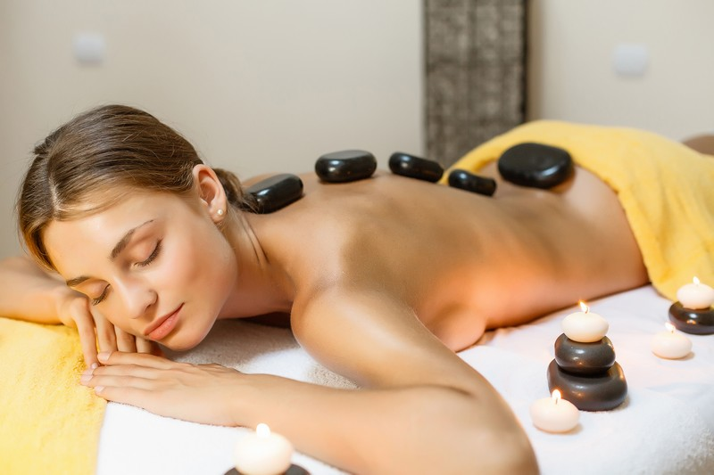

Стоунтерапія – як окремий вид релаксу
Стоунтерапія – один з найкращих методів розслабитися та звільнитися від думок, адже так важливо вчасно сказати собі «стоп», та відпочити від думок.
Що таке стоунтерапія і з чим її «їдять»?
Сучасний ритм життя просто закручує нас у вирі роботи, вирішенні проблем та різноманітних зустрічах.
Більшість людей відпочинок сприймає зовсім не так, яким він насправді повинен бути.
Сьогодні хочемо вас познайомити із методом, який допоможе вам забути про всі «надважливі» справи і по – справжньому розслабитися та звільнитися від думок.
Стоунтерапія – це особливий метод лікування і масажу камінням.
- це багатогранна методика масажу
- об’єднує давню практику зцілення мінералами з сучасним рівнем медичних знань в області фізіотерапії
- існує декілька особливостей виконання роботи та темпиратур
Терапія поділяється на декілька методик:
- використання виключно гарячих каменів в масажі
- накладання лише холодних каменів і контрастна стоун терапія
- почергове або одночасне використання теплих і холодних каменів